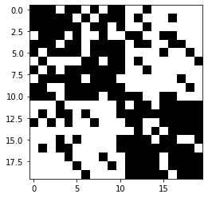
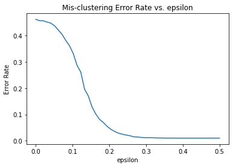

Stochastic Block Model¶
We will explore the relation between mis-clustering rate between the probability gap \(\epsilon\).
[2]:
import numpy as np
def generate_random_symmetric_matrix(N):
# generate_random_symmetric_matrix from uniform distribution
a = np.random.uniform(0,1,(N,N))
m = np.tril(a) + np.tril(a, -1).T
return m
generate_random_symmetric_matrix(5)
[2]:
array([[0.04073901, 0.91398904, 0.40394606, 0.96744071, 0.11529638],
[0.91398904, 0.69687795, 0.35428992, 0.73550064, 0.2678634 ],
[0.40394606, 0.35428992, 0.77961952, 0.7724379 , 0.06110118],
[0.96744071, 0.73550064, 0.7724379 , 0.84553956, 0.5528254 ],
[0.11529638, 0.2678634 , 0.06110118, 0.5528254 , 0.09993677]])
[4]:
def generate_random_adjacency_matrix(n, p):
# generate_random_adjacency_matrix with probability p if
# (i,j) from the same commnity
B = generate_random_symmetric_matrix(n) # n is assumed to be even
for i in range(n):
for j in range(n):
if i <= n/2 and j <= n/2:
if B[i,j] >= p: B[i,j] = 0
else: B[i,j] = 1
elif i <= n/2 and j > n/2:
if B[i,j] >= (1-p): B[i,j] = 0
else: B[i,j] = 1
elif i >= n/2 and j <= n/2:
if B[i,j] >= (1-p): B[i,j] = 0
else: B[i,j] = 1
else:
if B[i,j] >= p: B[i,j] = 0
else: B[i,j] = 1
return B
# Now we draw the adjacency matrix
import matplotlib.pyplot as plt
# change the sign of B to use black to denote there is an edge.
plt.imshow(-generate_random_adjacency_matrix(20, 0.8), origin="upper", cmap="gray")
[4]:
<matplotlib.image.AxesImage at 0x7f33f2b66e50>

[9]:
from numpy import linalg as LA
def SBM_model(num_nodes, eps):
'''
SBM model
input:
num_nodes: the number of nodes or number of people needed to be clustered
eps: epilson or probability gap
output:
miss clustering rate
'''
p = (1+eps)/2
q = (1-eps)/2
# compute surrogate matrix
A = generate_random_adjacency_matrix(num_nodes,p)
M = A - (p+q)/2 * np.ones((num_nodes,num_nodes))
w, v = LA.eig(M) # eigen-decomposition
# find leading eigenvector and predict
max_ind = np.argmax(w)
u = v[:,max_ind] # leading eigenvector
mask = u > 0 # find boolean mask
cluster = 2*mask -1 # make rounding output with +1 -1
# generate truth membership with +1 the first half
# and -1 the second half
truth_membership = np.concatenate((np.ones(int(num_nodes/2)),
-1*np.ones(int(num_nodes/2))))
# calculate miss clustering rate
mis_cluster_rate = min(np.sum(truth_membership != cluster),
np.sum(truth_membership != (-1*cluster)))/num_nodes
return mis_cluster_rate
SBM_model(50, 0.2)
[9]:
0.08
[14]:
eps_list = np.linspace(0, 0.5, 50)
error_rate_avg_record = []
for e in eps_list:
error_rate_list = []
for i in range(200):
error_rate_list.append(SBM_model(100, e))
avg = np.average(error_rate_list)
error_rate_avg_record.append(avg)
[19]:
plt.plot(eps_list, error_rate_avg_record)
plt.xlabel("epsilon")
plt.ylabel("Error Rate")
plt.title("Mis-clustering Error Rate vs. epsilon")
plt.show()
